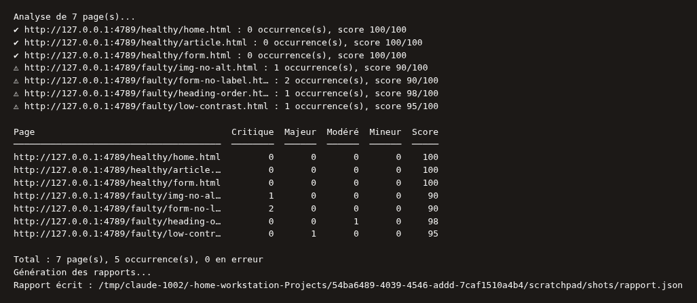
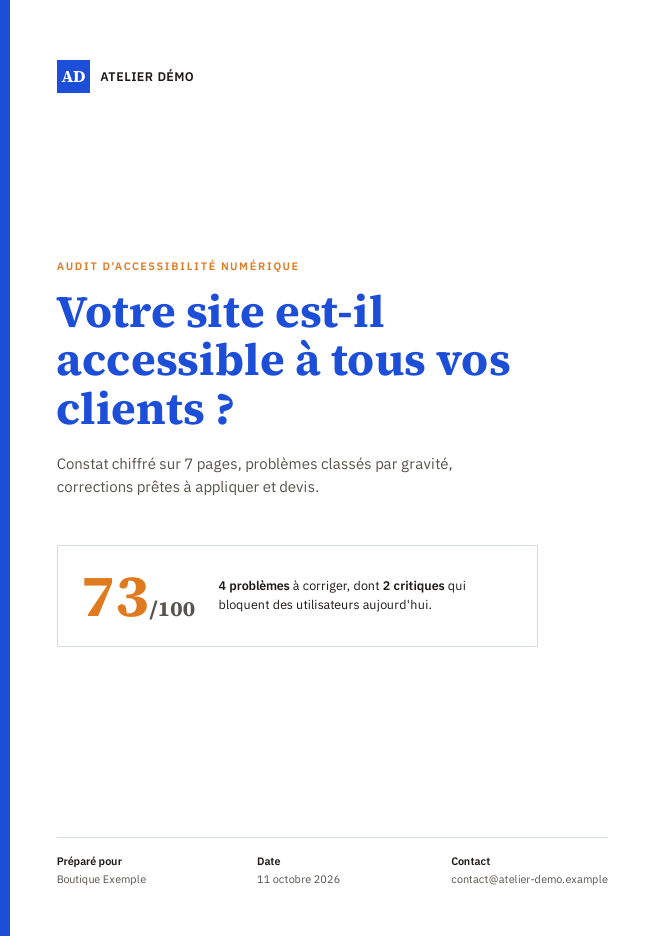
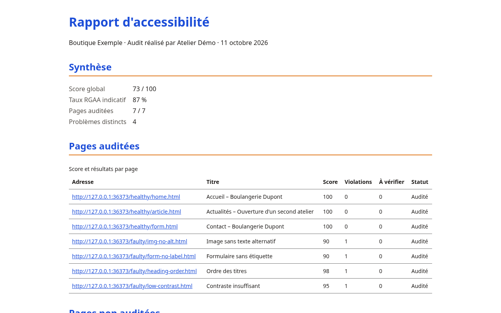

Fonctionnalités
Un audit automatique des pages, un rapport PDF que vous pouvez remettre à votre client, et les formats nécessaires à votre chaîne de livraison.
Audit
- Règles axe-core pour WCAG 2.0, 2.1 et 2.2, niveaux A et AA, et bonnes pratiques.
- Chaque règle affiche sa référence RGAA lorsqu'elle existe.
- Une ou plusieurs URLs, ou une exploration du site (même origine, robots.txt respecté) avec profondeur et nombre de pages réglables.
- Plusieurs viewports : mobile, tablette, bureau ou dimensions personnalisées.
- Une page injoignable apparaît dans le rapport avec son erreur, sans interrompre les autres pages.

Rapport PDF en marque blanche
- PDF A4 en français, avec le nom, le logo et la couleur de votre agence.
- Seule votre agence est nommée dans le document.
- Limites de l'audit automatique indiquées dans le rapport.
- Un rapport HTML autonome est généré en parallèle si vous le demandez.


Devis par phase
Le rapport se termine par un devis en trois phases : bloquants, gênants, finitions. Chaque phase affiche sa durée estimée. Avec un taux horaire HT, chaque phase reçoit aussi un prix HT.
Formats et intégration
- Sorties PDF, JSON, HTML, CSV et SARIF.
- Sauvegarde du scan en JSON, puis rechargement pour générer un autre rapport sans relancer l'audit.
- Mode
--ciavec seuils par niveau de gravité et codes de retour, pour bloquer une livraison. Voir la documentation.